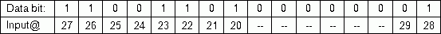

Modbus 集成（BI - 子系统特定扩展）
二进制输入 (BI) 对象支持子系统特定扩展的以下属性Integration.
✳ 表示西门子专有财产。
数据类型 ✳ |
|
| |||
|---|---|---|---|---|---|
数据类型定义用于编码子系统特定数据类型的数据类型。 | |||||
16 bit integer data formats with Registers: | |||||
Encoding format | Description | Byte order | |||
U16-B | 无符号 16 位；大尾数法 | BB AA | |||
Bitset encoding order for Coils and Discrete Inputs | |||||
B1…B8 | - 具有最低地址的线圈/离散输入被编码在最低有效位_0中。 | ||||
B9 … B16 | - 第一个传输的字节将传输具有最低 8 个地址的线圈/离散输入的信息。 | ||||
例子：  | |||||
Bit-Offset ✳ |
|
| |
|---|---|---|---|
"Bit-Offset“定义读取数据位集（线圈、离散输入）时的偏移量。这允许支持数据点地址的大规模操作/correction。 | |||
-1 |
| ||
0 |
| ||
100 |
| ||
Polling times ✳ |
|
| |
|---|---|---|---|
"Polling times" 定义用于轮询子系统特定数据点的轮询计时器。 T1、T2、T3 的间隔值可以在现场总线管理对象中配置。 | |||
T1 | 最高优先级。典型间隔值：0.5s...5s。 | ||
T2 | 中等优先级（默认）。典型间隔值：5s…60s。 | ||
T3 | 低优先级。典型间隔值：分钟...小时。 | ||